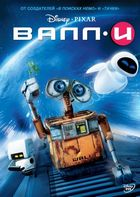

Мультфильм - это время, которое ты провёл с добрыми, отзывчивыми, весёлыми героями.
Представляем вашему вниманию подборку мультфильмов на любой вкус.
Топ 10 лучших мультфильмов:
The Lion King, 89 минут
Жанр: Мультфильм, Драма, Приключения, Семейный, Мюзикл
Режиссёр: Роджер Аллерс, Роб Минкофф
В ролях: Мэттью Бродерик (Adult Simba - озвучка), Джереми Айронс (Scar - озвучка),
Нэйтан Лейн (Timon - озвучка), Эрни Сабелла (Pumbaa - озвучка), Джеймс Эрл Джонс (Mufasa - озвучка)
У величественного Короля-Льва Муфасы рождается наследник по имени Симба. Уже в детстве любознательный малыш становится жертвой интриг своего завистливого дяди Шрама, мечтающего о власти. Симба познаёт горе утраты, предательство и изгнание, но в конце концов обретает верных друзей и находит любимую. Закалённый испытаниями, он в нелёгкой борьбе отвоёвывает своё законное место в "Круге жизни", осознав, что значит быть настоящим Королём.

WALL·E, 98 минут
Жанр: Мультфильм, Приключения, Семейный, Фантастика
Режиссёр: Эндрю Стэнтон
В ролях: Бен Бертт (WALLюiddot;E - M-O - озвучка), Элисса Найт (EVE - озвучка),
Джефф Гарлин (Captain - озвучка), Фред Уиллард (Shelby Forthright - BnL CEO), Джон Ратценбергер (John - озвучка)
Робот ВАЛЛ·И из года в год прилежно трудится на опустевшей Земле, очищая нашу планету от гор мусора, которые оставили после себя улетевшие в космос люди. поднимется к звездам и даже сумеет изменить к лучшему своих бывших хозяев, совсем позабывших родную Землю.
How to Train Your Dragon, 98 минут
Жанр: Мультфильм, Комедия, Приключения, Семейный, Фэнтези
Режиссёр: Дин ДеБлуа, Крис Сандерс
В ролях: Джей Барушель (Hiccup - озвучка), Джерард Батлер (Stoick - озвучка),
Крэйг Фергюсон (Gobber - озвучка), Америка Феррера (Astrid - озвучка), Джона Хилл (Snotlout - озвучка)
Вы узнаете историю подростка Иккинга, которому не слишком близки традиции его героического племени, много лет ведущего войну с драконами. Мир Иккинга переворачивается с ног на голову, когда он неожиданно встречает дракона Беззубика, который поможет ему и другим викингам увидеть привычный мир с совершенно другой стороны…
Song of the Sea, 93 минут
Жанр: Мультфильм, Семейный, Фэнтези
Режиссёр: Томм Мур
В ролях: Дэвид Роул (Ben - озвучка), Брендан Глисон (Conor - Mac Lir - озвучка),
Лиза Хэннигэн (Bronach - озвучка), Финола Флэнаган (Granny - Macha - озвучка), Люси О’Коннелл (Saoirse - озвучка)
Невероятная история Бена и его сестренки Сирши. Вместе они пускаются в фантастическое путешествие сквозь исчезающий мир древних легенд и магии, пытаясь вернуться домой.
Balto, 71 минут
Жанр: Мультфильм, Драма, Приключения, Семейный, История
Режиссёр: Саймон Уэллс
В ролях: Кевин Бейкон (Balto - озвучка), Боб Хоскинс (Boris - озвучка),
Бриджит Фонда (Jenna - озвучка), Джим Каммингс (Steele - озвучка), Фил Коллинз (Muk and Luk - озвучка)
Наполовину лайка, наполовину волк, Балто и сам не знает кто он такой на самом деле. Всеми гонимый бродяга в ледяной пустыне Аляски. Только его друзья русский полярный гусь Борис, медвежата Мак и Лак и красавица-лайка Дженна уверены, что хотя он и не такой как все, но в его груди бьется благородное сердце.Однажды случается несчастье. Эпидемия дифтерии охватила детей небольшого поселка, а свирепая вьюга сделала непроходимыми все дороги. Лишь собачья упряжка может преодолеть шестьсот миль через ослепляющий арктический шторм и привезти спасительное лекарство.Но собаки сбились с дороги где-то на замерзших просторах. Теперь только Балто может найти упряжку и спасти детей, а заодно стать героем и настоящей легендой!
Up, 96 минут
Жанр: Мультфильм, Драма, Комедия, Приключения, Семейный
Режиссёр: Пит Доктер, Боб Питерсон
В ролях: Эдвард Эснер (Carl Fredricksen - озвучка), Кристофер Пламмер (Charles Muntz - озвучка),
Джордан Нагаи (Russell - озвучка), Боб Питерсон (Dug - Alpha - озвучка), Делрой Линдо (Beta - озвучка)
78-летний ворчун Карл Фредриксен считает, что жизнь обходит его стороной. Чтобы сдержать обещание, данное своей почившей жене, он решает осуществить свою мечту о великом приключении, привязав тысячи воздушных шариков к своему дому и улетев в дебри Южной Америки. Не пролетев и полмили, путешественник обнаруживает, что он ненароком прихватил с собой крайне разговорчивого и неисправимо жизнерадостного 8-летнего мальчика по имени Рассел.
Inside Out, 94 минут
Жанр: Мультфильм, Комедия, Семейный
Режиссёр: Пит Доктер, Роналдо Дель Кармен
В ролях: Эми Полер (Joy - озвучка), Филлис Смит (Sadness - озвучка),
Ричард Кайнд (Bing Bong - озвучка), Билл Хейдер (Fear - озвучка), Льюис Блэк (Anger - озвучка)
Райли — обычная 11-летняя школьница, и, как у каждого из нас, ее поведение определяют пять базовых эмоций: Радость, Печаль, Страх, Гнев и Брезгливость. Эмоции живут в сознании девочки и каждый день помогают ей справляться с проблемами, руководя всеми ее поступками. До поры до времени эмоции живут дружно, но вдруг оказывается, что Райли и ее родителям предстоит переезд из небольшого уютного городка в шумный и людный мегаполис. Каждая из эмоций считает, что именно она лучше прочих знает, что нужно делать в этой непростой ситуации, и в голове у девочки наступает полная неразбериха. Чтобы наладить жизнь в большом городе, освоиться в новой школе и подружиться с одноклассниками, эмоциям Райли предстоит снова научиться работать сообща.
Monsters, Inc., 92 минут
Жанр: Мультфильм, Комедия, Приключения, Семейный, Фэнтези
Режиссёр: Пит Доктер, Дэвид Силверман, Ли Анкрич
В ролях: Джон Гудман (James P. 'Sulley' Sullivan - озвучка), Билли Кристал (Mike Wazowski - озвучка),
Мэри Гиббс (Boo - озвучка), Стив Бушеми (Randall Boggs - озвучка), Джеймс Коберн (Henry J. Waternoose - озвучка)
Склизкий гад в сливном бачке, мохнатый зверь, похожий на чудовище из «Аленького цветочка», гигантские мокрицы под кроватью — все они существуют на самом деле. Все, что им нужно — пугать детей, потому что из детских криков они получают электричество.Полнометражный мультфильм рассказывает о кризисах в мире монстров, их жизни. Но однажды вся мирная жизнь монстров оказывается под угрозой: в их мир попадает ребенок. А с детьми столько хлопот, что они могут довести даже монстров.
Ice Age, 81 минут
Жанр: Мультфильм, Семейный, Фэнтези, Мелодрама, Мюзикл
Режиссёр: Гари Труздейл, Кирк Уайз
В ролях: Пейдж О’Хара (Belle - озвучка), Робби Бенсон (Beast - озвучка),
Ричард Уайт (Gaston - озвучка), Джерри Орбак (Lumiere - озвучка), Дэвид Огден Стайерз (Cogsworth - рассказчик - озвучка)
В заколдованном замке, скрытом в темном лесу, живет ужасное Чудовище. Растопить лед в его сердце и вернуть ему человеческий облик, сняв заклятие, может только прекрасная девушка, которая полюбит его таким, какой он есть.

Song of the Sea, 93 минут
Жанр: Мультфильм, Комедия, Приключения, Семейный
Режиссёр: Крис Уэдж, Карлос Салдана
В ролях: Рэй Романо (Manfred - озвучка), Джон Легуизамо (Sid - озвучка),
Дэнис Лири (Diego - озвучка), Горан Вишнич (Soto - озвучка), Джек Блэк (Zeke - озвучка)
Веселые и опасные приключения героев. 20 тыс. лет назад. Чтобы избежать приближающегося из-за наступления ледникового периода холода, животные мигрируют на юг. Однако некоторые из них все-таки решают остаться - одинокий, угрюмый мамонт Манфред, а также бесшабашный ленивец Сид. Случайно эта парочка наталкивается на человеческого детеныша. Они решаются вернуть его людям и отправляются в путешествие. По пути они встречают саблезубого хитрого тигра. И теперь этой веселой компании предстоят забавные приключения!.